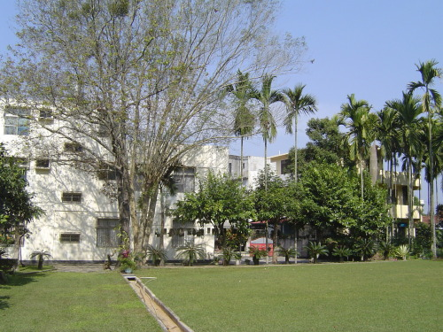

地主張先生、張太太，民國七十年結婚時種下 夫妻樹 —— 白雞油與楓香，如今枝葉繁茂，相伴四十餘載。
每年夏天，白雞油樹引來獨角仙吸食樹汁， 成為草地獨特的生態景觀。園內還有老桃樹、咖啡樹、神祕果、酒瓶蘭，四季各有風情。
南眺 牛相觸（南平山），山巒疊翠，視野開闊， 是這片草地最動人的自然框景。
副班長家草地 不只是張家夫婦的庭院，更是許多人的童年回憶。 夫妻樹見證了愛情與歲月，獨角仙的夏日派對、老桃樹春天的花影、咖啡樹結實纍纍的秋日， 以及冬日裡酒瓶蘭的挺拔姿態。南平山在望，風吹草低，這裡的每一寸土地都說著生活的故事。